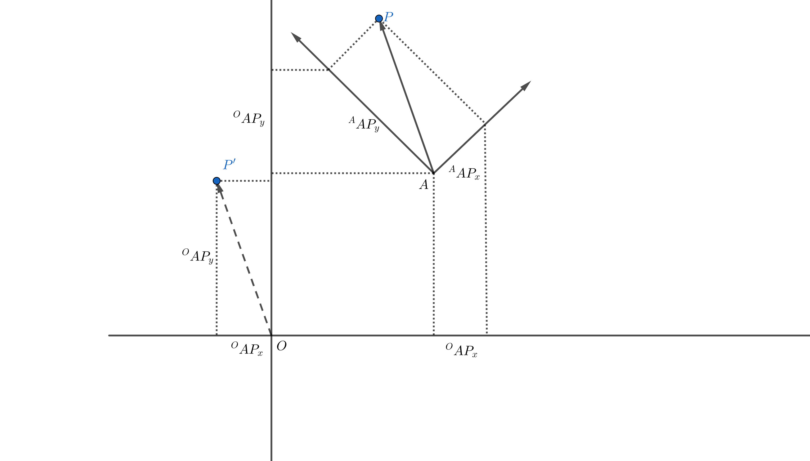
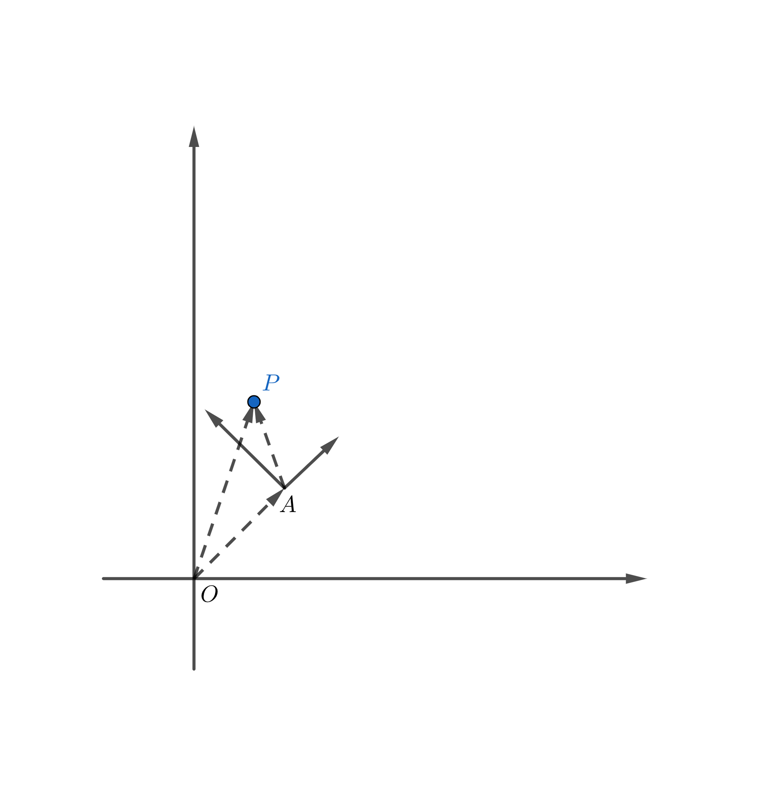
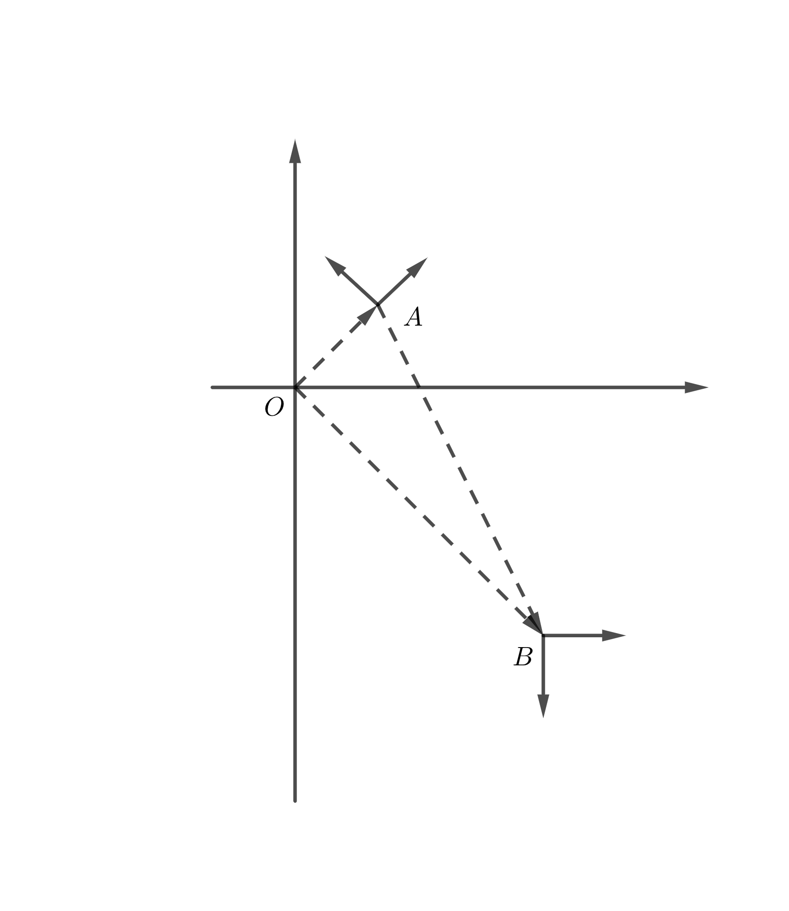
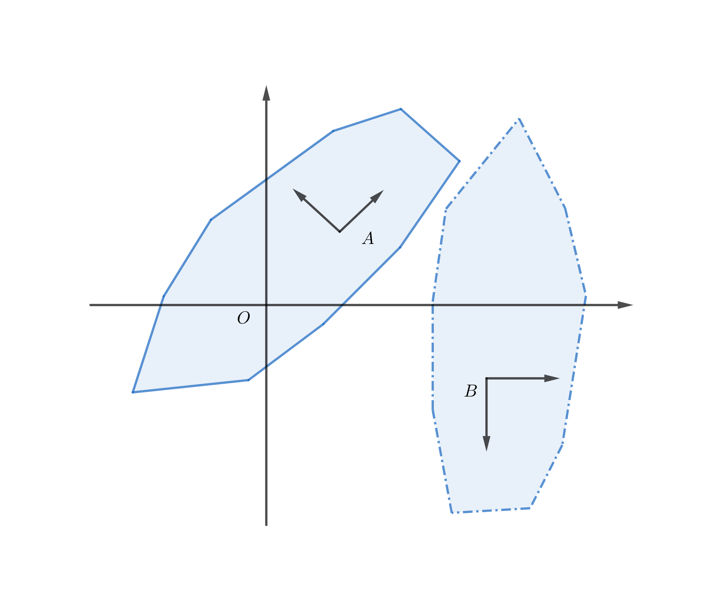
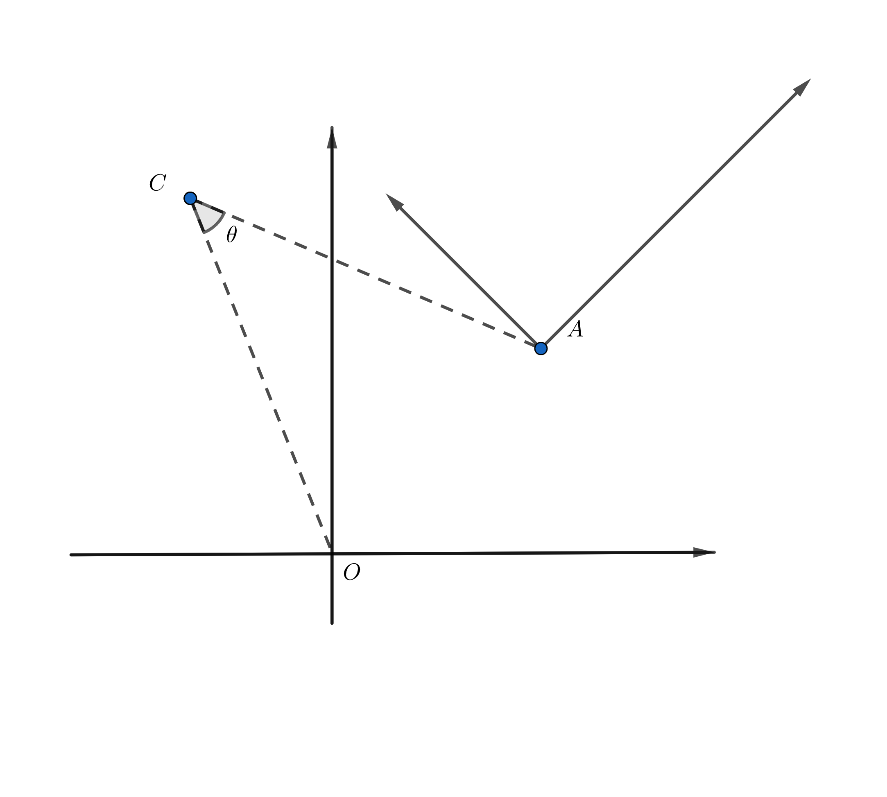
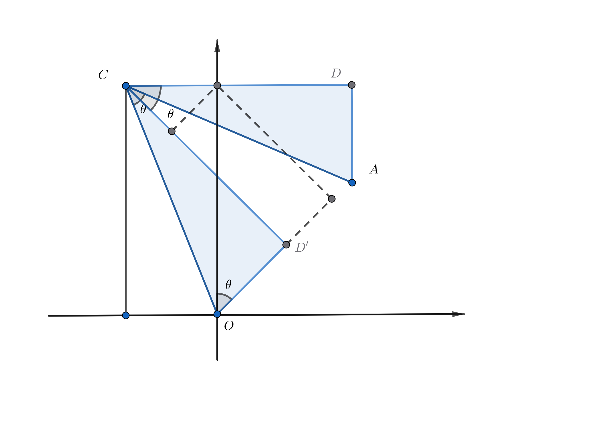

Pinocchio代码阅读——二维刚体运动
1. 自由向量坐标表示与旋转矩阵

自由向量 $\mathbf{AP}$ 只有长度、方向，没有固定起点，因此 $\mathbf{OP’}$ 也表示同一个向量。
要用坐标描述向量，一定要选取坐标系，用单位坐标向量和坐标乘积表示。
在坐标系 ${A}$ 中观察向量：
其中， $^Ax_A$ 表示在坐标系 ${A}$ 中观察 ${A}$ 的 $x$ 轴单位向量，即为 $\begin{bmatrix}
1 \
0
\end{bmatrix}$。
显而易见，在坐标系下观察本身， $\begin{bmatrix}
^Ax_A & ^Ay_A
\end{bmatrix}$ 为单位矩阵。
在坐标系 ${O}$ 中：
自由坐标没有固定起点和终点，只有方向和大小，因此 $\mathbf{OP’}$ 与 $\mathbf{AP}$ 是同一自由向量。假设坐标系 ${A}$ 相对 ${O}$ 的旋转角度为 $\theta$：
令 $^O\mathbf{R}_A \triangleq \begin{bmatrix}
^Ox_A & ^Oy_A
\end{bmatrix}=\begin{bmatrix}
\cos{\theta} & -\sin{\theta}\
\sin{\theta} & \cos{\theta}
\end{bmatrix}$ ，即为在 ${O}$ 中观察 ${A}$ 的矩阵。
总结：
对于自由向量$\mathbf{AP}$：
2. 点坐标表示与齐次矩阵

点的坐标表示可以理解为到坐标系原点的自由向量坐标。
即：
只有在同一坐标系下才可以做向量运算
在坐标系${O}$ 中：
代入旋转矩阵：
即：
写成矩阵形式：
令 $^O\mathbf{T}_A = \begin{bmatrix}
{^O\mathbf{R}_A} & {^O{\mathbf{OA}}}\
0 & 1\end{bmatrix}$ ，称为齐次矩阵。
总结：
对于点 $\mathbf{P}$：
3. 矩阵的运算
已知 ${^O\mathbf{T}_A}$ 与 ${^O\mathbf{T}_B}$ ，那么 ${B}$ 相对于 ${A}$ 的齐次矩阵 ${^A\mathbf{T}_B}$ 是什么？

由定义可得：
可以理解为从 ${O}$ 先运动到 ${A}$ 再运动到 ${B}$ 与从 ${O}$ 直接运动到 ${B}$ 结果相同。
若 $\mathbf{T}$ 可逆，则：
计算 ${^O\mathbf{T}^{-1}_A}$：
计算 ${^O\mathbf{R}^{-1}_A}$：
可以观察到：
3. 二维旋量
齐次矩阵可以表示刚体的运动，也可以表示刚体的位姿状态，因为刚体的位姿可以理解为刚体从观察坐标系到当前位姿的运动。
齐次矩阵是3X3矩阵，共9个元素。然而实际上描述一个二维运动只需要旋转角度和平移一共3个独立参数。
考虑单位时间内的匀速运动，例如刚体上某个点以3rad/s，1m/s的速度运动1s。可以用这个点的线速度和角速度来描述整个刚体的运动。注意这个点指的是坐标系上的点，不是刚体上随刚体运动的点。
讨论刚体运动时，运动的是刚体，坐标系是静止的。不存在跟随刚体一起运动的坐标系。

只需要知道刚体上任意一点的速度信息，便可以计算出整个速度场的状态。定义速度旋量：
表示刚体上位于坐标系 ${O}$ 原点位置点的角速度与线速度在 ${O}$ 中观察的结果。
那么，可以表示刚体上点 $A$ 的速度场：
其中：
是一个反对称矩阵（$[{^O\omegaO}] \times=-[{^O\omegaO}]^T \times$），表示叉乘。
为了写成矩阵形式，定义：
那么可以得到坐标系上任意一点速度场：
这个 $A$ 点不一定真实存在在刚体上，表示的是如果无限大刚体延申到坐标系上 $A$ 点，那么刚体上 $A$ 点速度。
二维旋量定理：
任何二维空间运动都可以表示为绕某个中心的纯旋转（纯平移对应旋转中心无穷远）
旋转中心 $C=\begin{bmatrix} -\dfrac{\mathbf{v}_y}{\omega} \ \dfrac{\mathbf{v}_x}{\omega}\end{bmatrix}$
分别在 ${O}$ 和 ${A}$ 坐标系中表示 $B$ 点速度场：
涉及到两次变换：
一是 $B$ 点位置的变换，二是 $B$ 点速度的变换。
因此：
进一步，这个式子还可以写成矩阵相乘的形式：
其中：
称为伴随矩阵。
这个伴随矩阵与线性代数中的伴随矩阵无关。
齐次方程表示位姿，组成配置空间；旋量表示速度，是位姿的导数，组成切空间。
配置空间的齐次变换对应到切空间中的变换就称为齐次变换的伴随。
速度旋量可以表示什么：
- 刚体的运动状态：瞬时线速度和角速度
- 刚体位姿变换：单位时间匀速（恒定旋量速度）运动的效果
- 刚体位姿状态：从基坐标系单位时间匀速运动的效果
4. 由旋量计算旋转矩阵
考虑方程：
解为：
如果 $\mathbf{T}(0)={^A\mathbf{T}_O}$ , $\mathbf{T}(1)={^B\mathbf{T}_O}$，那么 ${^B\mathbf{T}_A}=e^{\xi^{\wedge}}$ 。
因此切空间可以通过指数运算转换到配置空间。
注意这是矩阵的指数运算，与标量指数运算不同，$e^{a}e^{b}=e^{a+b}$ 一般不成立。
4.1 凯莱 - 哈密顿定理
凯莱 - 哈密顿定理表明每个方阵都满足其特征多项式方程：若 $f(λ)=det(λI-A)$ 是矩阵 A 的特征多项式，则 $f(A)=0$。
对于 $n$ 维方阵，特征方程是 $n$ 次的，也就是说 $A^n$ 一定可以用最高次为 $n-1$ 的多项式表示。进一步可以得到：
对于 $n$ 维方阵 $A$ ，$A^k(k \ge n)$都可以表示为：
例1：$[\omega]_\times$ 是二维方阵：
例2：${\hat{\xi}}$ 是三维方阵：
4.2 速度旋量与旋转矩阵
类似于泰勒展开，可以把exp表示成多项式的形式。
令$e^{ {\xi}^{\wedge} }=e^{\begin{bmatrix}
[\omega]_\times & v \
0 &0
\end{bmatrix}}=
\begin{bmatrix}
\mathbf{R} & t \
0 & 1
\end{bmatrix}=\mathbf{T}$
4.2.1 旋转部分
4.2.1.1 exp
以上证明了$e^{[\omega]_\times}$与旋转矩阵的等价性
Pinocchio中实现：
1 | template<typename Matrix2Like, typename Vector2Like, typename Vector4Like> |
Pinocchio中的刚体姿态 $\mathrm{SE}(2)$ 用4维向量表示：
旋量$\mathfrak{se}(2)$用3维向量表示：
forwardKinematics函数由 $\mathbf{q}$ 计算 $\mathbf{R}$ 和 $t$
4.2.1.2 log
已知旋转矩阵 $\mathbf{R} = \begin{bmatrix} \cos{\theta} & -\sin{\theta}\
\sin{\theta}&\cos{\theta}\end{bmatrix}$ ，$\theta = \log({\mathbf{R}})$，使用矩阵的迹：
Pinocchio中的实现方式，涉及精度问题：
1
2
3
4
5
6
7
8
9
10
11
12
13
14
15
16
17
18
19
20
21
22
23
24
25
26
27
28
29
30
31
32
33
34
35
36
37
38
39
40template<typename Matrix2Like>
static typename Matrix2Like::Scalar log(const Eigen::MatrixBase<Matrix2Like> & R)
{
typedef typename Matrix2Like::Scalar Scalar;
PINOCCHIO_EIGEN_STATIC_ASSERT_MATRIX_SPECIFIC_SIZE_OR_DYNAMIC(Matrix2Like, 2, 2);
const Scalar tr = R.trace();
static const Scalar PI_value = PI<Scalar>();
using internal::if_then_else;
Scalar theta = if_then_else(
internal::GT, tr, Scalar(2),
Scalar(0), // then
if_then_else(
internal::LT, tr, Scalar(-2),
if_then_else(
internal::GE, R(1, 0), Scalar(0), PI_value,
static_cast<Scalar>(-PI_value)), // then
if_then_else(
internal::GT, tr,
static_cast<Scalar>(Scalar(2) - Scalar(1e-2)), // TODO: change value
static_cast<Scalar>(asin((R(1, 0) - R(0, 1)) / Scalar(2))), // then
if_then_else(
internal::GE, R(1, 0), Scalar(0),
static_cast<Scalar>(acos(tr / Scalar(2))), // then
static_cast<Scalar>(-acos(tr / Scalar(2)))))));
// const bool pos = (R (1, 0) > Scalar(0));
// if (tr > Scalar(2)) theta = Scalar(0); // acos((3-1)/2)
// else if (tr < Scalar(-2)) theta = (pos ? PI_value : -PI_value); // acos((-1-1)/2)
// Around 0, asin is numerically more stable than acos because
// acos(x) = PI/2 - x and asin(x) = x (the precision of x is not lost in PI/2).
// else if (tr > Scalar(2) - 1e-2) theta = asin ((R(1,0) - R(0,1)) / Scalar(2));
// else theta = (pos ? acos (tr/Scalar(2)) : -acos(tr/Scalar(2)));
assert(check_expression_if_real<Scalar>(theta == theta) && "theta is NaN"); // theta != NaN
// assert ((cos (theta) * R(0,0) + sin (theta) * R(1,0) > 0) &&
// (cos (theta) * R(1,0) - sin (theta) * R(0,0) < 1e-6));
return theta;
}
| 条件 | 等价数学场景 | 使用的函数 | 数值理由 |
|---|---|---|---|
| tr > 2 | 浮点误差导致的越界 | $\theta=0$ | 消除数值噪声 |
| tr < -2 | 角度接近 ±π | 根据 sin 符号取 ±π | 避免边界歧义 |
| tr > 2 - 1e-2 | 小角度 | asin | 避免 acos 在 1 附近的精度灾难 |
| 其他情况 | 中等角度 | acos + sin符号判断 | 标准稳定算法 |
4.2.2 平移部分
4.2.2.1 exp
可以直观地理解这个结果：
旋转中心 $C=\begin{bmatrix} -\dfrac{\mathbf{v}_y}{\omega} \ \dfrac{\mathbf{v}_x}{\omega}\end{bmatrix}$
对于刚体运动 $^A\mathbf{T}_O$ :

用图形解释：坐标系 ${O}$ 绕点 $C$ 旋转 $\theta$ 角度后得到的 ${A}$ 坐标系的原点坐标。

可以用初中的几何知识，将 $\triangle ACD$ 绕点 $C$ 顺时针旋转 $\theta$ 到 $\triangle OCD’$ ，即可证明其正确性。
Pinocchioz中实现方式：
1 | static void exp( |
当 $\omega<1^{-14}$ 时，$t = v$，可以理解为0附近泰勒展开 $\mathbf{V}(\omega)=\mathbf{I}$
4.2.2.2 log
先由 $\mathbf{R}$ 计算 $\omega$，再由 $t$ 计算 $v$ ：
求逆：
Pinocchio中的实现方式：
1 | template<typename Matrix2Like, typename Vector2Like, typename TangentVector> |
- $\dfrac{\omega \sin\omega}{2(1-\cos\omega)}$ 在0附近是 $\frac{0}{0}$ 型，有精度问题，使用泰勒展开：如果 $\omega$ 是 $10^{-4}$ 量级，$o(\omega^6)$ 是 $10^{-24}$ 量级，已经低于双精度浮点数的精度。
- 计算过程中使用的是 $\left | \omega \right |$ 。$\dfrac{\omega \sin\omega}{2(1-\cos\omega)}$ 是偶函数，使用绝对值不影响结果。使用绝对值可以解决由舍入误差带来的过零处不连续问题，再配合泰勒展开，提高数值精度。